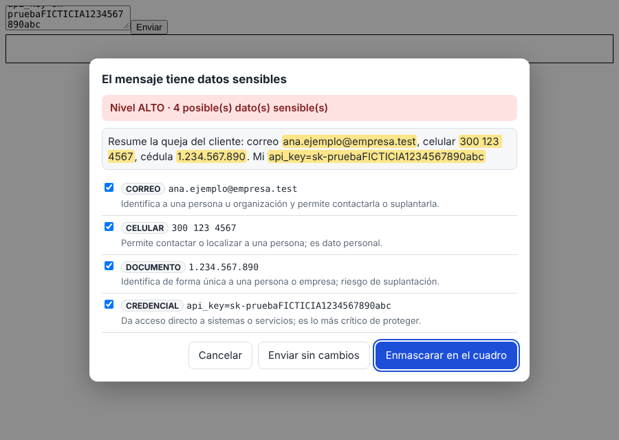

Extensión gratuita para Chrome y Edge. Detecta correos, cédulas, tarjetas, contraseñas y otros datos sensibles cuando pegas o envías un mensaje en ChatGPT, Gemini, Copilot o Claude, y los cambia por etiquetas antes de que salgan.
No tienes que acordarte de revisar nada. La extensión actúa sola en el momento justo.
En ChatGPT, Gemini, Copilot o Claude, al pegar texto, presionar Enter o hacer clic en Enviar.
Resalta cada dato, te dice por qué es riesgoso y el nivel del mensaje. Si no hay nada, no te interrumpe.
Enmascarar, enviar sin cambios o cancelar. Puedes desmarcar los datos que no quieras ocultar.

Ocho categorías, con validaciones para no dar falsas alarmas: el algoritmo de Luhn para tarjetas, el dígito de verificación del NIT y palabras de contexto para cédulas y cuentas.
No detecta nombres propios ni direcciones físicas. Revisa siempre el texto tú también.
Una herramienta de privacidad que mandara tu texto a un servidor para revisarlo sería otro riesgo. Esta no lo hace.
Sin permiso de internet. Todo el análisis corre en tu navegador. Compruébalo con F12, en la pestaña Red: no sale ninguna petición.
Permisos mínimos. Solo actúa en las cuatro páginas de IA. En otras páginas, solo cuando tú usas el clic derecho.
No guarda lo que escribes. Solo guarda tu configuración. Las equivalencias de las etiquetas viven en la pestaña y se borran al cerrarla.
No vigila, avisa. No registra lo que escribe nadie. Explica el riesgo y deja que la persona decida.
Medimos el detector con un banco de textos ficticios: casos típicos, textos limpios, casos ambiguos y textos escritos a propósito para engañarlo.
La detección baja en los textos de evasión, como «ana @ empresa.test» o «(300) 123-4567». La extensión está pensada para evitar errores involuntarios, no para detener a quien quiera sacar información a propósito.
Se instala en modo desarrollador con el archivo .zip. Los pasos son los mismos en Chrome y en Edge.
revisor-ia-extension.chrome://extensions en la barra (en Edge, edge://extensions) y activa el Modo de desarrollador.Última actualización: 23 de noviembre de 2026 · Aplica a la extensión «Revisor de datos sensibles para IA», versión 0.3.1 y posteriores.
La extensión lee el texto que pegas o envías en chatgpt.com, chat.openai.com, gemini.google.com, copilot.microsoft.com y claude.ai, y el texto que seleccionas cuando usas sus opciones del clic derecho. Lo lee solo para buscar datos sensibles en él.
Todo el análisis ocurre en tu navegador, en la memoria de la pestaña. La extensión no tiene permiso de red: no envía tu texto ni ningún otro dato a servidores propios ni de terceros, y no usa analítica, publicidad ni rastreadores.
Solo tu configuración (si la revisión está activa, la política flexible o estricta y si usas etiquetas numeradas), con el almacenamiento del navegador. La tabla que une cada etiqueta, como [CORREO_1], con su dato real vive solo en la memoria de la pestaña y se borra al recargarla o cerrarla. No se guarda el texto revisado.
Con nadie. No vendemos, cedemos ni transferimos datos. El texto que finalmente envías a la IA lo trata el proveedor de esa IA según su propia política; la extensión solo te ayuda a quitarle los datos sensibles antes.
storage para tu configuración; contextMenus, activeTab y scripting para revisar un texto seleccionado solo cuando tú lo pides con el clic derecho; y acceso a los cinco sitios de IA mencionados para revisar al pegar o enviar.
Equipo del proyecto: Joel Martínez, Maicol Villalobos Cano y Luis Aguilar, Diplomado en Ciberseguridad, Corporación Universitaria Latinoamericana, Barranquilla, Colombia.